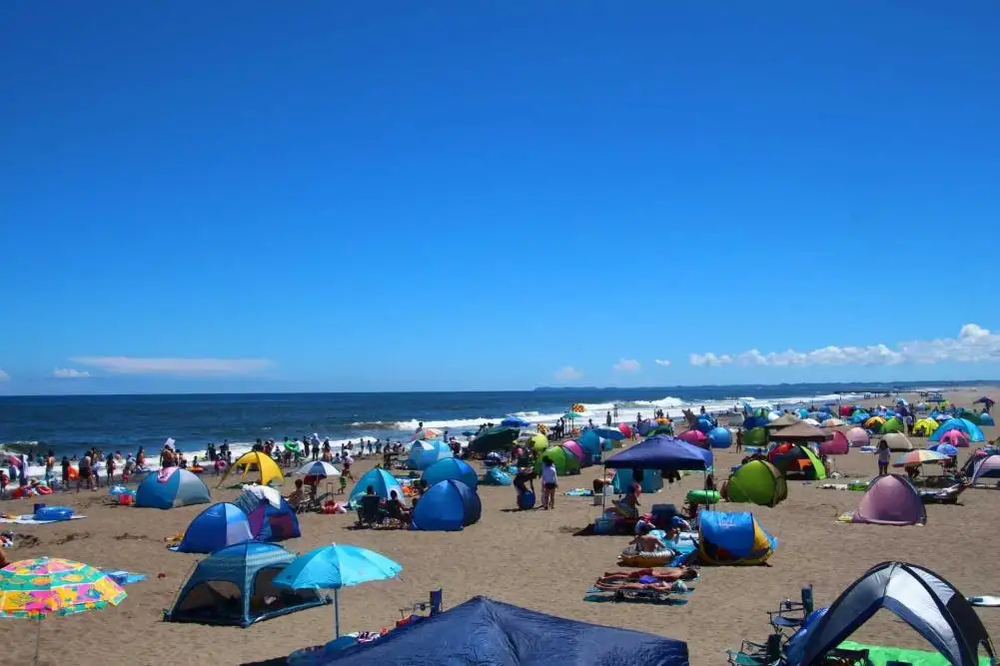
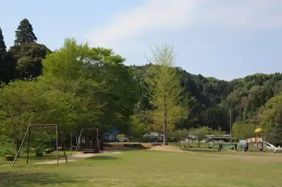
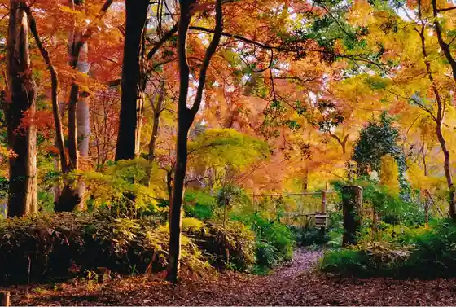
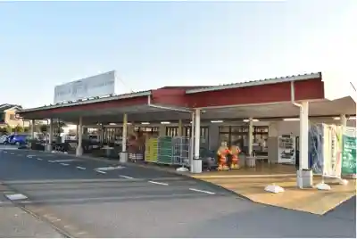

Oamishirasato, Chiba
Oamishirasato · Chiba
Oamishirasato
Highlighted on the Chiba map.

Sights
Shiro Sato Coast (Shiro Sato Beach)
Konaka Ike Park

Toeda Forest

Sambu Midori no Kaze Oami Mise

Oamishirasato · Chiba
Oamishirasato
Highlighted on the Chiba map.

Shiro Sato Coast (Shiro Sato Beach)
Konaka Ike Park

Toeda Forest

Sambu Midori no Kaze Oami Mise
